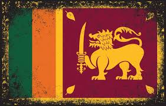
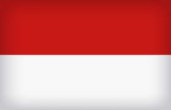

Sri Lanka
Sri Lanka's documented history goes back 3,000 years, with evidence of prehistoric human settlements that dates back at least 125,000 years. [15] The earliest known Buddhist writings of Sri Lanka, known collectively as the Pāli canon, date to the fourth Buddhist council, which took place in 29 BCE.[16][17] Also called the Teardrop of India, or the Granary of the East, Sri Lanka's geographic location and deep harbours have made it of great strategic importance, from the earliest days of the ancient Silk Road trade route to today's so-called maritime Silk
Indonesia
Indonesia,[a] officially the Republic of Indonesia,[b] is a country in Southeast Asia and Oceania between the Indian and Pacific oceans. It consists of over 17,000 islands, including Sumatra, Java, Sulawesi, and parts of Borneo and New Guinea. Indonesia is the world's largest archipelagic state and the 14th-largest country by area, at 1,904,569 square kilometres (
China
China,[k] officially the People's Republic of China (PRC), [l] is a country in East Asia. It is the world's most populous country, with a population exceeding 1.4 billion, slightly ahead of India. China spans the equivalent of five time zones and borders fourteen countries by land,[m] the most of any country in the world, tied with Russiat